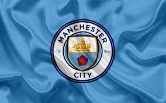

Manchester City
El Manchester City Football Club, conocido como Manchester City, es un club de fútbol de la ciudad de Mánchester, Inglaterra, que juega en la Premier League. Fue fundado el 23 de noviembre de 1880 bajo el nombre de St. Mark's (West Gorton), luego pasó a llamarse Ardwick Association Football Club en 1887 y finalmente, el 16 de abril de 1894, adquirió su denominación actual. El club disputó sus partidos en el Etihad Stadium desde 2003, habiendo jugado en el Maine Road desde 1923. El club adoptó su camiseta de local celeste en 1894 en la primera temporada de la versión actual del club, y se han utilizado desde entonces.En términos de trofeos ganados, es el quinto club más exitoso en el fútbol inglés.
